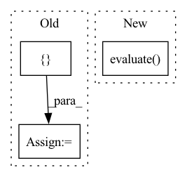

Pattern ID :27272
Before Change
users = users.cpu().numpy()
items = items.cpu().numpy()
scores = scores.detach().cpu().numpy()
batch_result = self.evaluator.evaluate([ users, items, scoresAfter Change
def _valid_epoch(self, valid_data):
self.model.eval()
valid_result = self.evaluate( valid_data)
valid_score = calculate_valid_score(valid_result)
return valid_score, valid_result
In pattern: SUPERPATTERN
Frequency: 5
Non-data size: 3
Instances Fragment ID: 80952275
Project Name: rucaibox/recbole
Commit Name: 5cdb3f2f291c452e0242da319cebf5bb84f1d30e
Time: 2020-06-29
Author: 2015201909@ruc.edu.cn
File Name: trainer/trainer.py
M Class Name: Trainer
N Class Name: Trainer
M Method Name: _valid_epoch(2)
N Method Name: _valid_epoch(2)
M Parent Class: object
N Parent Class: object
M File Name: trainer/trainer.py
N File Name: trainer/trainer.py
M Start Line: 61
M End Line: 73
N Start Line: 67
N End Line: 67
Before Change
return loss
def evaluate(self,progress):
label_result = []
pred_result = []
for step,batch in progress:
batch = [data.cuda() for data in batch]
bert_inputs, attention_masks, grid_labels, grid_mask2d, pieces2word, dist_inputs, sent_length = batch
outputs = self.forward(bert_inputs, attention_masks, grid_mask2d, dist_inputs, pieces2word, sent_length)
grid_mask2d = grid_mask2d.clone()
outputs = torch.argmax(outputs, -1)
grid_labels = grid_labels[grid_mask2d].contiguous().view(-1)
outputs = outputs[grid_mask2d].contiguous().view(-1)
label_result.append(grid_labels)
pred_result.append(outputs)
label_result = torch.cat(label_result)
pred_result = torch.cat(pred_result)
p, r, f1, _ = precision_recall_fscore_support(label_result.cpu().numpy(),
pred_result.cpu().numpy(),
average="macro")
After Change
outputs = torch.argmax(outputs, -1)
grid_labels = grid_labels[grid_mask2d].contiguous().view(-1)
outputs = outputs[grid_mask2d].contiguous().view(-1)
metrics.evaluate( outputs,grid_labels)
// return outputs, grid_labels
// input_ids, attention_mask, segment_ids, valid_masks, label_ids, label_masks = batch
// prediction, valid_len = self.predict(batch) Fragment ID: 80952278
Project Name: jinzhuoran/cogie
Commit Name: d4cede0c7903e052fe379326fe2f6dfb4526339d
Time: 2022-04-11
Author: 1208314139@qq.com
File Name: cogie/models/ner/w2ner.py
M Class Name: W2NER
N Class Name: W2NER
M Method Name: evaluate(3)
N Method Name: evaluate(2)
M Parent Class: nn.Module
N Parent Class: nn.Module
M File Name: cogie/models/ner/w2ner.py
N File Name: cogie/models/ner/w2ner.py
M Start Line: 272
M End Line: 297
N Start Line: 300
N End Line: 311
Before Change
// Label encoder:
encoder = hparams["label_encoder"]
dsets = [ hparams["train_data"], hparams["valid_data"], hparams["test_data"]After Change
**hparams["dataloader_options"],
)
// Evaluation is run separately (now just evaluating on valid data)
ali_brain.evaluate( valid_data)
// Check if model overfits for integration test
assert ali_brain.train_loss < 2.0
Fragment ID: 80952267
Project Name: speechbrain/speechbrain
Commit Name: c9b83509f0a07e61ef75f23e359eec163c98ad12
Time: 2020-12-26
Author: mirco.ravabelli@gmail.com
File Name: recipes/minimal_examples/neural_networks/ASR_alignment_viterbi/example_asr_alignment_viterbi_experiment.py
M Class Name: AnonimousClass
N Class Name: AnonimousClass
M Method Name: main(0)
N Method Name: main(0)
M Parent Class:
N Parent Class:
M File Name: recipes/minimal_examples/neural_networks/ASR_alignment_viterbi/example_asr_alignment_viterbi_experiment.py
N File Name: recipes/minimal_examples/neural_networks/ASR_alignment_viterbi/example_asr_alignment_viterbi_experiment.py
M Start Line: 46
M End Line: 72
N Start Line: 106
N End Line: 132
Before Change
def _valid_epoch(self, data_loader, model, use_cuda, total_batch, verbose, criterion):
model.train(False)
total_loss = []
total_acc = []
cnt = 0
loc_size = model.loc_size
for batch in data_loader:
batch.to_tensor(gpu=use_cuda)After Change
print("finish batch {}/{}".format(cnt, total_batch))
self.evaluator.collect(evaluate_input)
avg_loss = np.mean(total_loss, dtype=np.float64)
avg_acc = self.evaluator.evaluate() [self.metrics[0]] // 随便选一个就行
return avg_loss, avg_acc
def get_acc(self, target, scores, topk = 1): Fragment ID: 80952265
Project Name: libcity/bigscity-libcity
Commit Name: 51403f094fe439b6470cf8b36665bff72f09fddd
Time: 2020-12-23
Author: 33283819+WenMellors@users.noreply.github.com
File Name: trafficdl/executor/traj_loc_pred_executor.py
M Class Name: TrajLocPredExecutor
N Class Name: TrajLocPredExecutor
M Method Name: _valid_epoch(7)
N Method Name: _valid_epoch(7)
M Parent Class: AbstractExecutor
N Parent Class: AbstractExecutor
M File Name: trafficdl/executor/traj_loc_pred_executor.py
N File Name: trafficdl/executor/traj_loc_pred_executor.py
M Start Line: 135
M End Line: 149
N Start Line: 131
N End Line: 149
Before Change
// Label encoder:
encoder = hparams["label_encoder"]
dsets = [ hparams["train_data"], hparams["valid_data"], hparams["test_data"]After Change
**hparams["dataloader_options"],
)
// Evaluation is run separately (now just evaluating on valid data)
ali_brain.evaluate( valid_data)
// Check if model overfits for integration test
assert ali_brain.train_loss < 350
Fragment ID: 80952284
Project Name: speechbrain/speechbrain
Commit Name: c9b83509f0a07e61ef75f23e359eec163c98ad12
Time: 2020-12-26
Author: mirco.ravabelli@gmail.com
File Name: recipes/minimal_examples/neural_networks/ASR_alignment_forward/example_asr_alignment_forward_experiment.py
M Class Name: AnonimousClass
N Class Name: AnonimousClass
M Method Name: main(0)
N Method Name: main(0)
M Parent Class:
N Parent Class:
M File Name: recipes/minimal_examples/neural_networks/ASR_alignment_forward/example_asr_alignment_forward_experiment.py
N File Name: recipes/minimal_examples/neural_networks/ASR_alignment_forward/example_asr_alignment_forward_experiment.py
M Start Line: 44
M End Line: 70
N Start Line: 100
N End Line: 126